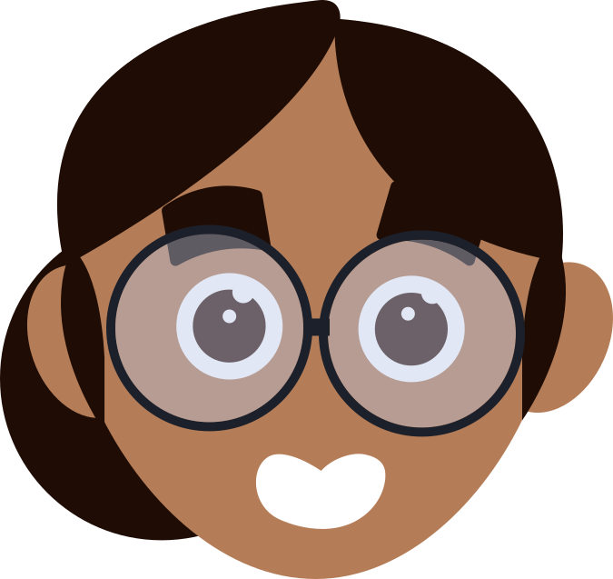
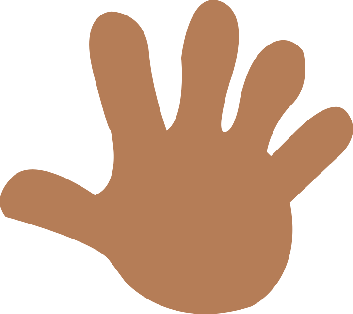
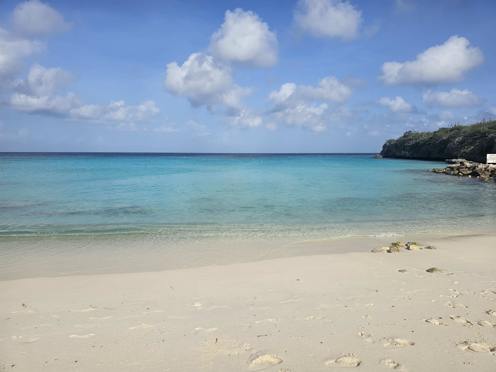
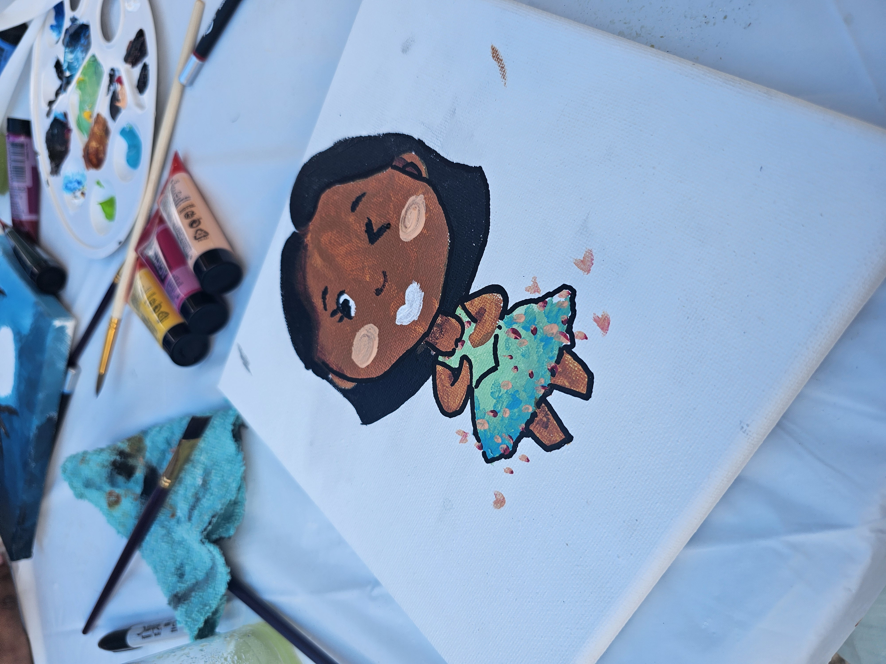

Keisha Alexander
🇨🇼 - Curaçao, Willemstad
- @keisha
- Junior Front-end Developer at go2people
- Part time
Als UI/UX designer en Front-end Developer breng ik mijn passie voor design en technologie samen.


🇨🇼 - Curaçao, Willemstad
Als UI/UX designer en Front-end Developer breng ik mijn passie voor design en technologie samen.
Junior Front-end Developer
UX-Designer
van Curaçao
gen Z
creatief en nauwkeurig
Ik ben
Hi, Ik ben Keïsha Alexander, ik ben 24 jaar oud. Na 4 jaar ben ik afgestudeerd met mij
bachelor van Communication and Multimedia Design bij de HVA. Momenteel ben ik werkzaam bij de go2people Digital agency als Junior Front-end Developer.
Bij go2people hou ik me bezig met verschillende uitdagende projecten waaronder websites die een groot impact heeft
op de maatschappij. Ik werk samen in een multidisciplinaire team met verschillende afkomst.
Ik ben zelfstandig maar ben wel een teamplayer.
Alle taken die aan
mij worden toegewezen, zijn nauwkeurig uitgevoerd. Verder ben ik een creatieve persoon die
een hoge
probleemoplossing
vermogen heeft. Ik heb een oog voor detail en een sterk verbeeldingskracht. Aan de andere
kant ben
ik structureel en
werkt heel systematisch. Kortom hou ik van gestructureerd werken. Voor meer informatie zie
mijn cv!

Ik ben geboren en getogen op Curaçao en kwam naar Nederland om te studeren. Curaçao is een eiland die ligt in de Caribische gebied. Daar spreken we Papiaments. Ik ken in totaal vier talen namelijk Papiaments, Nederlands, Engels en Spaans.

Een schilderij van mezelf! Gemaakt op mijn verjaardag.
In mij vrije tijd doe ik verschillende activiteiten om mezelf te vermaken. Sinds jongs af aan hield ik van tekenen en heb ik verschillende projecten gemaakt. Ik heb tijdens het maken van de projecten veel geëxperimenteerd met soft pastel krijten, plakkaatverf, waterverf, alcohol stiften en nog veel meer. Tegenwoordig hou ik mij bezig met het maken van digitale illustraties. Ook hou ik van lezen, ik hou ervan om meer kennis op te doen op verschillende onderwerpen. Verder luister ik graag naar muziek en hou af een toe van een goede videospel.